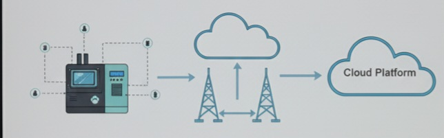
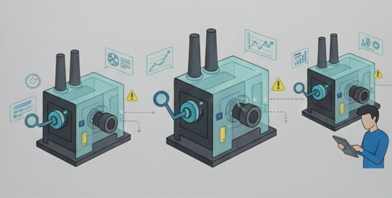

How Digital Twins Work
1. Data Collection (physical world)
Sensors implanted on the object capture data such as temperature, pressure,vibration, and energy usage.
2.Data Transmission
This data is sent to a cloud-based platform through the Internet of Things (IoT) connectivity
3.Data integration and Model Creation
The collected data is fed into a virtual model using CAD, simulation software and complex algorithms. This model is the digtal twin representing the reat-time stae and behavior of the physical objcet.
Analysis and simulation
Al algorithms analyze performance metric to detect anomalies and simulate different operational conditions.
Prediction and optimization
Engineers use the twin to run "what-if" scenerios" affecting the real physical asset. This allows for predictive maintenance, process optimization, and design validation.